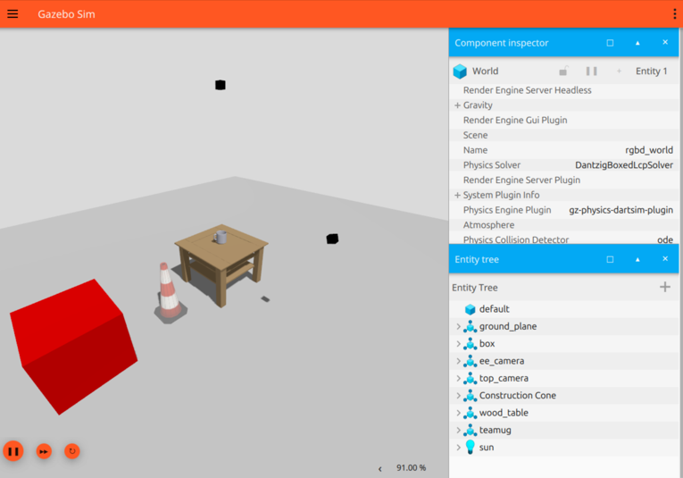
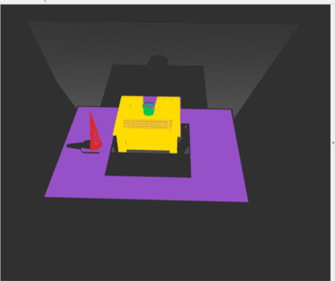
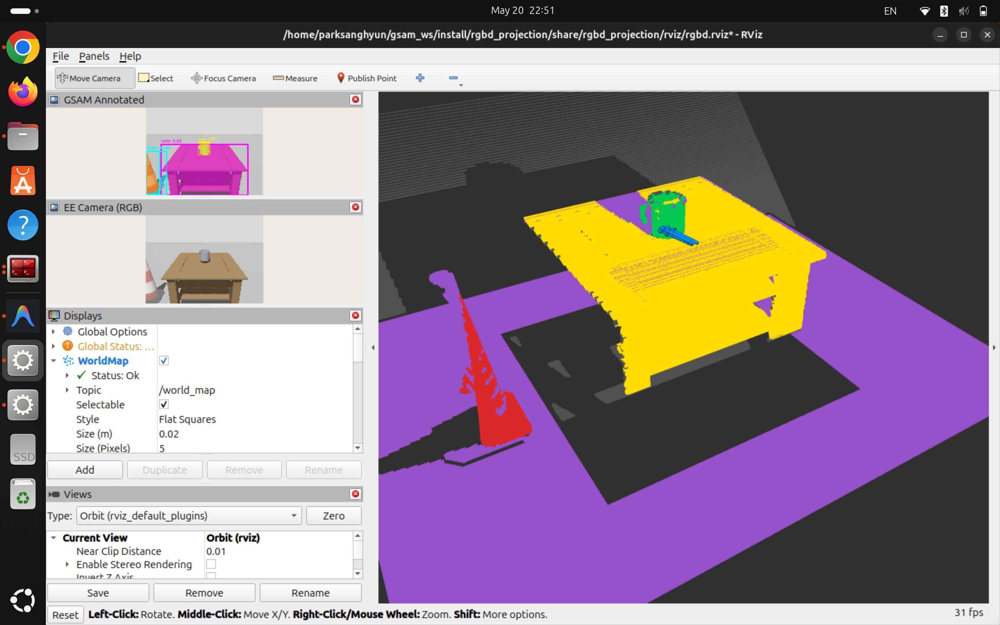
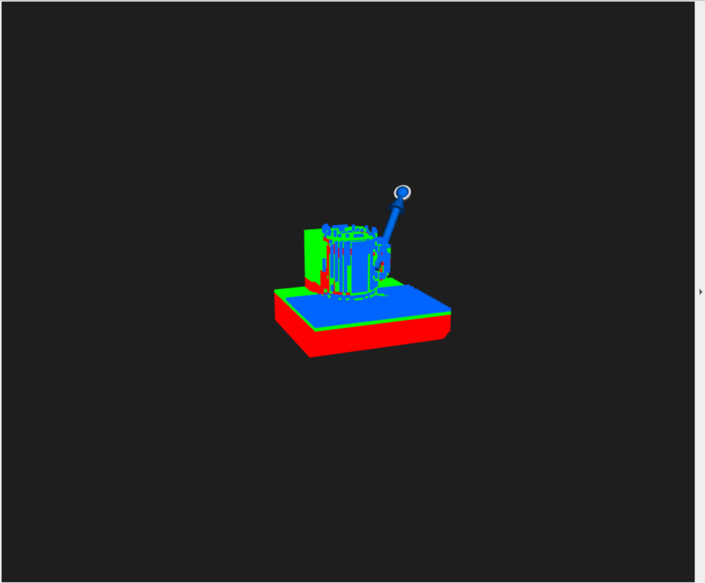

About
I am an undergraduate student interested in robotic systems that connect visual perception, 3D scene understanding, grasp prediction, and motion planning.
Research Interests
Robotics · Computer Vision · 3D Scene Understanding · Robot Manipulation
Projects
Grounded-SAM + VGN ROS2 Grasping Pipeline
- Built a ROS2-based perception-to-grasp pipeline integrating Grounded-SAM, RGB-D perception, semantic point cloud generation, TSDF construction, and VGN-based grasp candidate prediction.
- Designed the pipeline toward scene-aware robotic grasping and motion planning.




VGN Data Generation & Training Experiments
- Customized VGN data generation pipeline for TSDF-based robotic grasp prediction.
- Generated packed and piled synthetic grasping scenes and conducted additional training experiments on GPU servers.
4-DOF Fin Ray Robot Arm
- Designed and 3D-printed a 4-DOF robotic arm with compliant Fin Ray-inspired structure.
- Implemented URDF modeling, RViz2 visualization, and inverse-kinematics-based end-effector control.

Technical Experience
Robotics / Vision
ROS2 · Grounded-SAM · YOLO · Point Cloud Projection · Multi-view Fusion · Qwen
Robot Learning / Grasping
VGN · TSDF Representation · Synthetic Data Generation · Grasp Dataset Construction · Model Fine-tuning
Robotics / Hardware
Fusion 360 · URDF Modeling · Dynamixel · Inverse Kinematics
Programming / System
Python · C++ · Linux · CUDA Environment Setup · GPU Server Usage